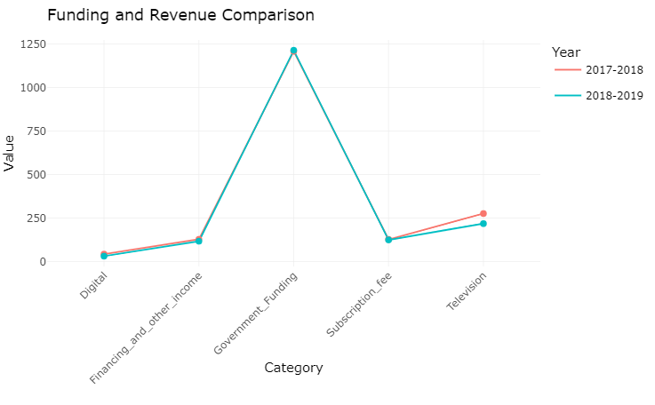
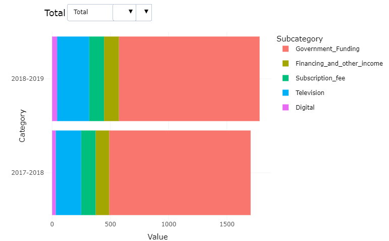

Mid Project
Redesigning of a Bad Graph Using R
In my future role as a data analyst, it’s crucial for me to grasp the significance of graphs as tools for visualizing analyzed information, especially for people who aren’t familiar with the subject. However, it’s equally important to recognize that graphs can sometimes mislead or manipulate audiences by conveying false information. As a data analyst, choosing the right type of graph is a critical decision because a poorly chosen one can completely alter the interpretation of the analysis.
Let me explain this with an example: Imagine you’re analyzing sales data for a company, and you want to illustrate the sales performance over time. You could choose to represent this data using a line graph, a bar graph, or even a pie chart. Each type of graph would present the information differently, potentially leading to different conclusions. If you mistakenly choose a pie chart instead of a line graph, it might make the sales appear more evenly distributed than they actually are, giving a false impression of the company’s performance.
Now, let’s talk about a project I’ve been working on. I came across a poorly designed graph that was unclear and possibly misleading. So, I took the initiative to redesign it, making it more straightforward, easy to understand, and ensuring that it accurately represents the data without any manipulation. This way, the reader gets a clear and truthful picture of the content without being misled by the visual representation.
Bad Graph chosen
.png)
Why is this graph bad ?
When you first look at the chart, it might seem alright, but actually, there are quite a few issues with it.
One big problem is with the Y-axis, the vertical line on the left side. It’s broken, and the numbers on it don’t make sense. For example, it goes from $100 million to $700 million, then suddenly jumps to $1.7 billion. This makes it look like $490 million is more than $1.2 billion, which isn’t right at all!
Also, when you glance at the chart, it seems like the TV revenue and government funding are about the same. This is because the blue and pink parts of the bars look almost equal in length. But that’s just because the Y-axis is messed up.
Another issue is that the bars for revenue and advertising shouldn’t be separate from the main bar showing total income. They’re not separate things; they’re just parts of the total income. But here, they’re showing it as if they’re different things, which can be confusing.
Redesigned Plots


I’ve redesigned the graph to fix the above mentioned issues and even made it interactive. This means that when you look at it, you can click on different parts and get more information. This makes it easier for people to understand and engage with the data.
Here is the link to the video where I discussed my project in detail:
Reference for the Bad Graph:
[Funding of a broadcast company in two financial years ](https://cbc.radio-canada.ca/en/impact-and-accountability/finance/annual-reports/ar-2018-2019/financial-sustainability/revenue-and-other-funds)